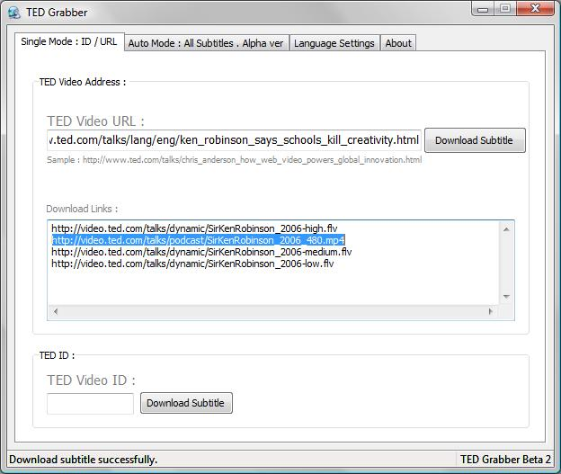
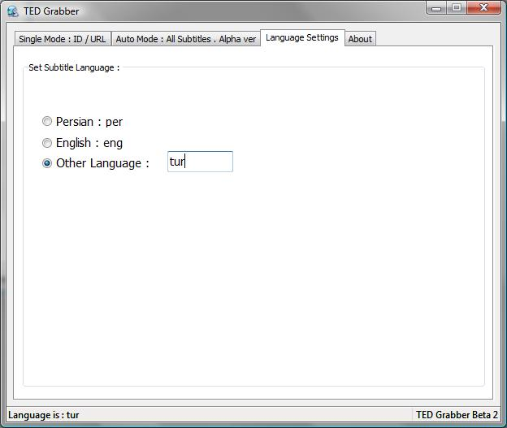

TED videolarını ve altyazılarını bilgisayara indirmece
TED'i hepiniz bilirsiniz (bkz. bir önceki yazıdaki Ken Robinson'un TED'deki konuşma örnekleri). Harika konuşmalar var. İnsanın kaydedesi ve tekrar tekrar seyredesi geliyor, ve yeni öğrendiğim bir yazılım buna imkan sağlıyor. Hem de altyazılarını da kaydedebiliyor!
Yazılımın adı TEDGrabber. Eskiden Sourceforge'daymış ama ücretsiz olmasına rağmen açık kaynak olmadığı için oradan kaldırılmış, yazarı da bu adrese koymuş. İndirip doğrudan çalıştırabilirsiniz. Çalıştırınca alttakine benzer bir arayüzle karşılaşacaksınız. "TED Video URL" yazan yere TED'deki sayfanın tam adresini yazarsanız ve sonra "Download Subtitle" derseniz, program bulunduğu klasörün içinde gerekli klasörü yaratıp altyazıyı oraya indiriyor. Tabii varsayılan olarak İng. seçili. Bunu değiştirmek için de ikinci resimdeki gibi, altyazı seçeneğini "tur" yaparsanız Türkçe altyazı iner. Dikkat, videoları bu yazılım indirmiyor, size adreslerini gösteriyor. Ben yüksek çözünürlüklü olmasını tercih ettiğim için altta mavi ile taradığım versiyonu indirdim. Hepsi aynı, kaliteleri farklı. İndirmek için ister Firefox kullanın, ister bir indirme yöneticisi. Ben JDownloader kullanıyorum.


Çok işlevsel bir yazılım! İyi seyirler...


11 yorum
olmuyor...sadece video iniyor altyazı yok
İndirdiğiniz zip dosyasını bir klasöre açmadan yapmış olabilir misiniz? TedGrabber.exe dosyasının bulunduğu klasörde altyazı klasörü oluşturup oraya indiriyor bende.
Bu arada videoyu otomatik indirmiyor zaten, sadece linklerini gösteriyor. Videoyu manuel indirmek lazım.
Maalesef ben de altyazı indirmeyi beceremedim. Sonuçta linkteki videoyu bir program ile indiriyorum ve videoda o altyazı gömülü olrak gelmiyor.
Sizin örneğinize dönersek: http://...sirkenrobinson2006.mp4 dosyası mesela, o dosyayı zaten zip olarak değil mp4 olarak indirdik diyelim. Altyazı nerede onu anlayamadım.
Daha açıklayıcı bilgi verirseniz sevinirim
@Gürkan Engin: Şimdi tekrar denedim, altyazı indi. Şöyle yaptım:
1 - TEDGrabber_beta2.rar dosyasını makineme indirdim ve içeriğini TEDGrabber_beta2 diye bir klasöre çıkarttım.
2 - Klasörün içindeki TedGrabber.exe dosyasını çalıştırdım.
3 - "TED Video Address" yazan kutuya TED videosunun adresini girdim ve "Download Subtitle" tuşuna bastım. Örneğin http://www.ted.com/talks/lang/eng/ken_robinson_says_schools_kill_creativity.html adresini girdim.
4 - TEDGrabber_beta2\Subtitle\eng\ klasörünün içine SirKenRobinson_2006__subtitle_id-66_eng.srt dosyası indi.
5 - "Language Settings" sekmesinden dili "tr" yapınca, TEDGrabber_beta2\Subtitle\tr klasörünün içine yine srt uzantılı Türkçe altyazı dosyası indi.
Bilgilerin yardımcı olması dileğiyle.
İsmail bey çok teşekkür ederim.
İlginç daha önce denediğimde olmamıştı (en azından ben olmadığını sanmıştım) Ama şu anda denedim ve oldukça güzel sonuç aldım.
Not: İşletim sistemim Windows değil, programı Pardus üzerinde windows emülatör programı olan Wine ile çalıştırdım. Buna rağmen program sorunsuz çalışıyor.
İşe yaradığına sevindim. TED videoları gerçekten harika.
Ben de uzun zamandır bunu arıyordum.Harika paylaşım .Teşekkürler.
Bende böyle bir program arıyordum çok faydalı oldu teşekkür ederim
Teşekkürler. Fakat bu programın eksisi; Türkçe altyazılardaki Türkçe karakterleri soru işareti olarak download etmesidir.
http://tedtalksubtitledownload.appspot.com/
sitesinden yukardaki programa girildiği gibi konunun linki girilip download a basılınca her dil için ayrı link çıkıyor "Turkish" seçip indirdiğimiz ".srt" uzantılı dosyayı not defteri ile açıp "utf-8" seçerek kaydedersek altyazıları Türkçe karakter sorunu olmadan görebiliriz.
@neuro Çok teşekkürler.
@neuro söylediğin şeyleri yaptım ama altyazzılar erken geliyor hepsinde onu nasıl yapıcaz hafız